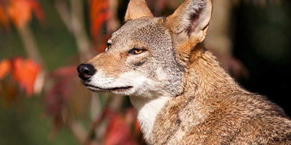

Red Wolf
Critically Endangered
Estimated remaining: 28 & 31
Habitat
Red wolves lived in forests, wetlands, swamps, and coastal prairies
Threats
- human-caused
- Gunshots
- vehicle collisions
Conservation efforts
A combination of captive breeding programs, like the Species Survival Plan (SSP), and the unique practice of pup fostering